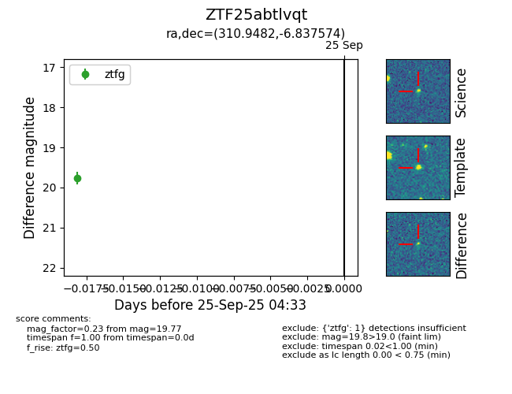

FINK: ZTF25abtlvqt
Lasair: ZTF25abtlvqt
ALeRCE: ZTF25abtlvqt
ZTF25abtlvqt (ztf,fink)
equatorial (ra, dec) = (310.9482,-6.83757)
galactic (l, b) = (39.9099,-28.05684)

last ztfg=19.77
1 ztfg detections